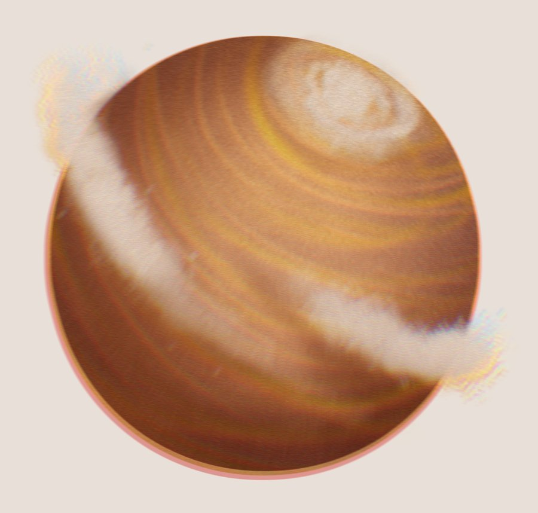
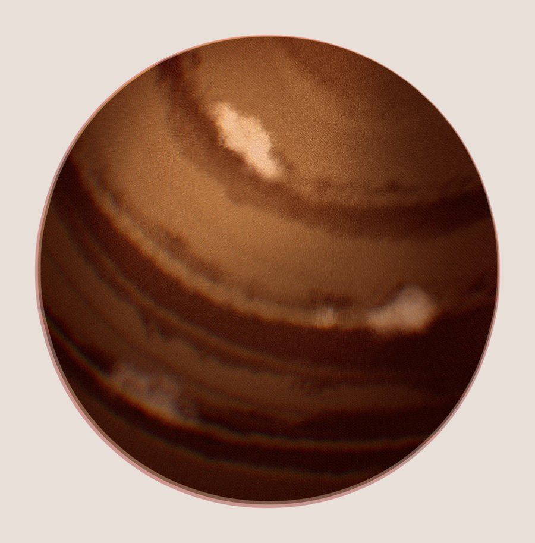
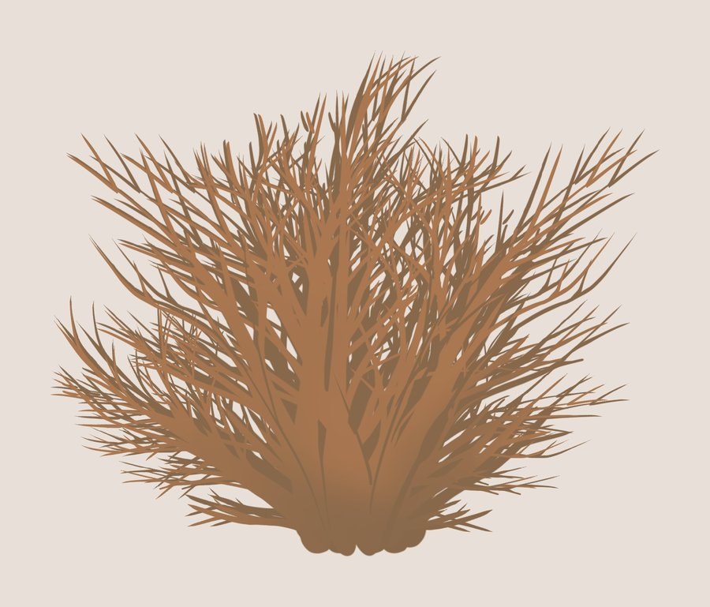
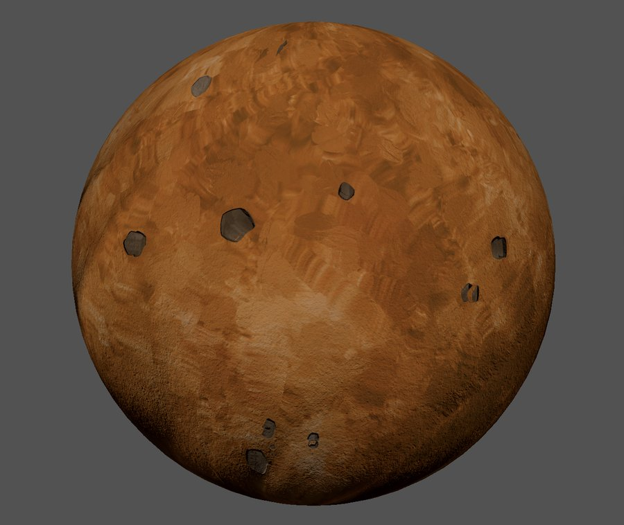
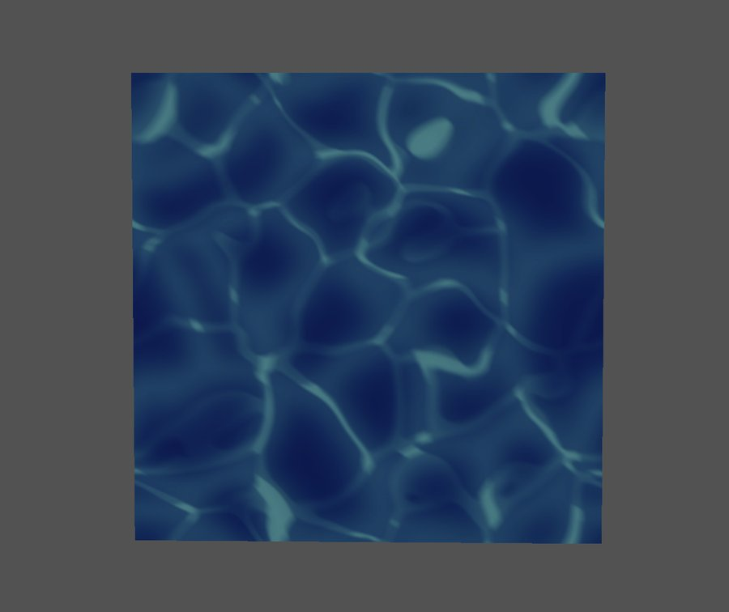
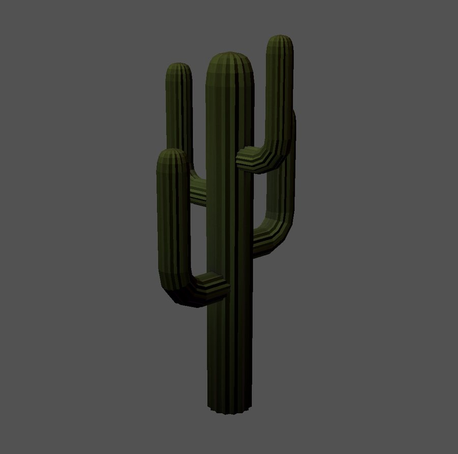
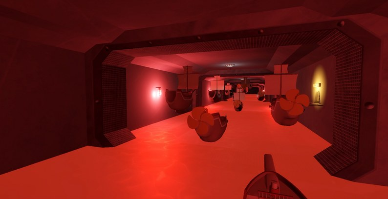
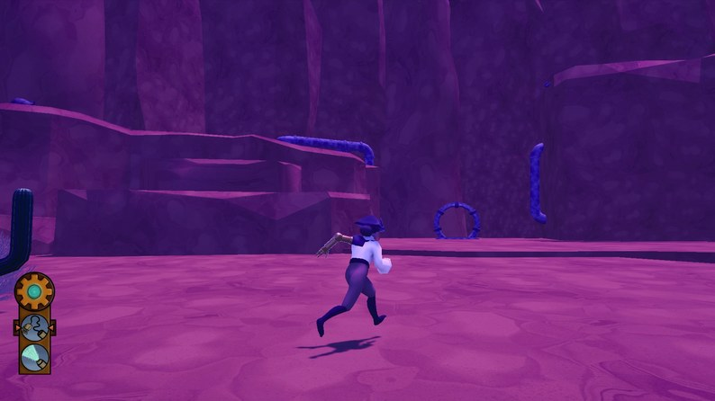

Ashra and the Shattered Key
A 3D puzzle-adventure game where players use unique tools to solve puzzles, explore multiple levels, and recover the Shattered Key.
- Course
- Game Production
- Role
- Co-producer, UI designer
- Status
- Completed
- Team
- 9 people
- Tools
- Unity (engine), Maya (models), Substance Painter and Designer (textures), Blender (animation), ClickUp (organization)
- Play
- itch.io page
My contributions
- Coordinated team tasks, deadlines, and development progress.
- Designed and implemented UI elements throughout the game.
- Contributed to the design and development of select environments, including portal and sand textures and a cactus model.
Process
- Organized production tasks and tracked team progress.
- Designed UI with a focus on clarity and consistency.
- Collaborated with the team on environment development.
UI, final screens


[Early UI sketches and drafts, to compare with the final]
Art assets





Textures




Cactus models



In the game




Challenges
Balancing production responsibilities with hands-on UI work while keeping the team organized and the game's visual experience consistent.
Result
[Gameplay video link]
What I learned
[Takeaways you would apply next time.]